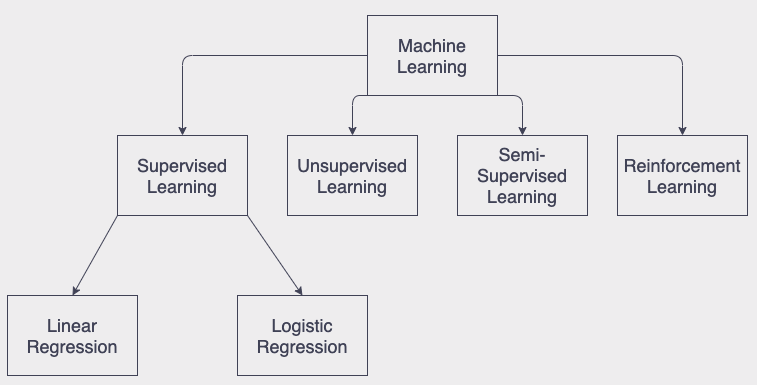
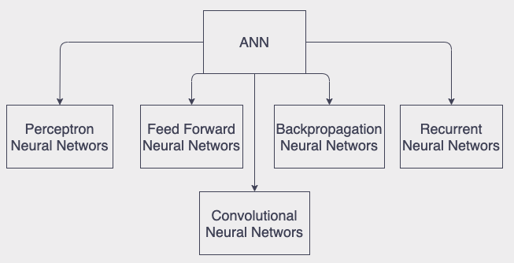
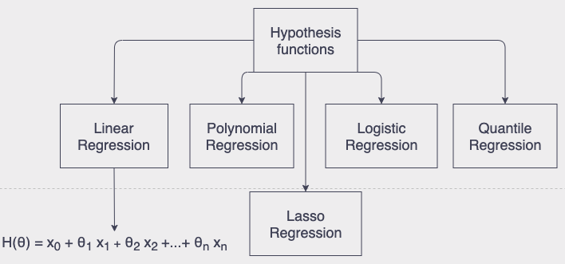
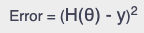
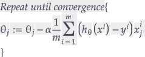

I gave the brief intro about the Artificial Intellgence(AI) and Machine Learning(ML) in my last blog. Previous blog was mainly about Reinforcement Learning and its subset Q Learning allgorihm. In this blog I will write about anoher subgroup of ML, Supervised Learning and Artificial Neural Networks(ANN). Again, taxonomy can be designed as a figure shown below:
Actually ANN algortihm at least as a concept presented so much time ago, in the 1943 by young mathematician Walter Pitts. But its development phases took long a bit and only after 90s scientist and engineers started to use it widely. Till that calculation potential of computers was not enough to imply the algorithm. Below you can see some well known architectures of Neural Networks are used nowadays.
In this blog there is not main focus on any spesific arhictecture but I will try to generalize them and explain how ANN works. But I am planning to write the blogs about architectures one by one. I will share my framework and explain how to implement it for each architectures as well. Although I also will share my framework in the end of this blog.
To keep it simple and create basic imagination of Neural Networks, it is like a human child. If it encounters with something for the first time ANN tries to predict what it is based on its current knowledge. Then our little “child” asks to its parents or teachers. Then compares its prediction with the answer. If there is big differene ANN should update its knowledge. All these learning sessions go on and on again till it reaches to the maturity and can predict everything confidently with its background knowledge.
Okay that is enough to create the imagination that how our Neural Networks algorihtm works. This working mechanism is valid for all Supervised Parametric Learning algorthms and architectures.
First thing first let’s deep dive and study how our “child” tries to predict. Nueral Networks uses several functions(mostly called Hypothesis functions in ML) for that purpose that are listed below:
Each function can be used to scale inputs to the outputs for various problems. Scalling, this is actually what ANN does to predict. Think x’s as features of tree like colour, height or shapes of leaves here our Neural Networks tries to forecast the name of tree. And the product of these Hypothesis functions is its prediction.
Next step for “child” is to be sure if its prediction is true. To calculate that mathematically there are bunch of error functions proposed but most popular one is called Square Mean Error:
So product of Hypothesis function is prediction of “child”s and y is answer of a parent. With help of this error function child can learn how much it missed the right answer.
After finding how big or small ANN mistake did while predicting it learns and update its knowledge. From Hypothesis functions the thetas can be imagined as the knowledge of ANN. In more technical language it is called weights, parameters or model, we can use these terms interchangeably. So to update weights we have set of algoritms. We will focus on Full Gradient Descent in this blog series and again mostly implemented one is that as well. And mathematically Gradient Descent can be presented as below:
Here alpha is learning rate. It decides how many lessons our “child” learns from its mistakes. So it would be any number between 0 and 1. With this formula our algorithm can enhance its knowledge.
So in this blog I gave the brief introduction to the ANN and tried to explain its working mechanism. For next couple of blogs I will log architectures of ANN and their implementations. In order to keep blogs short and clean I will explain part by part. As always I shared source code of my ANN framework and its Demonstration code that shows how developers can implement the framework to their applications below, in the Appendices section.
Please rotate your device!